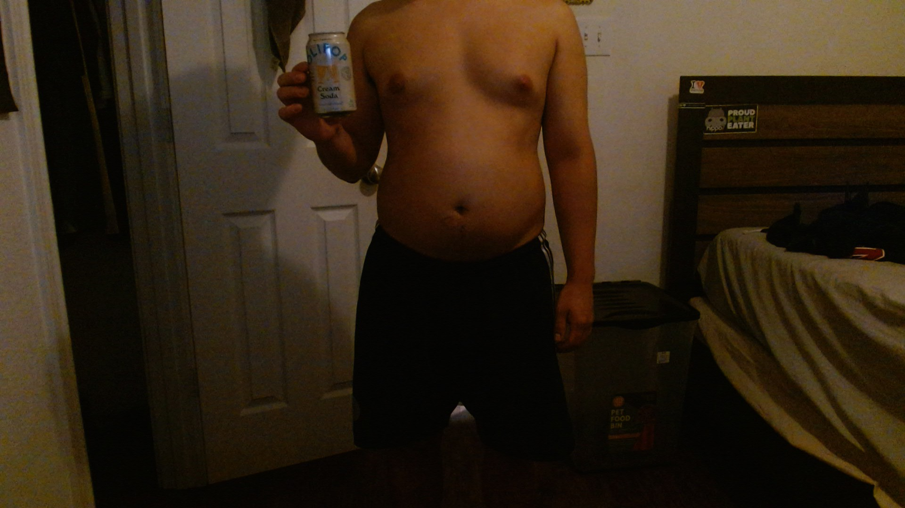
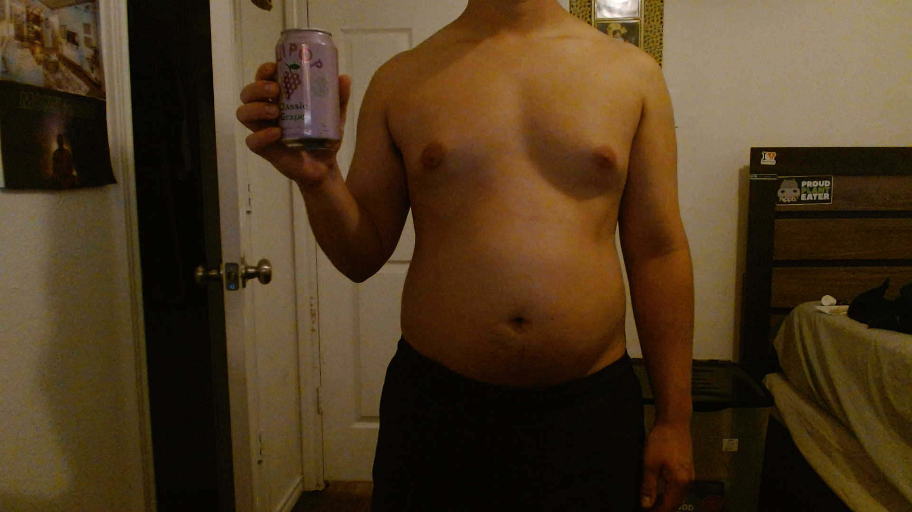

Day 1
Today was ok, I did eat 2 small bags of chips which was not necessary.
Public Discipline Log
I am replacing traditional soda with Olipop while documenting the journey toward a visible six pack. This is not a shortcut. This is a discipline experiment.

Today was ok, I did eat 2 small bags of chips which was not necessary.

Today was good, I only ate 1 small bag of chips today.